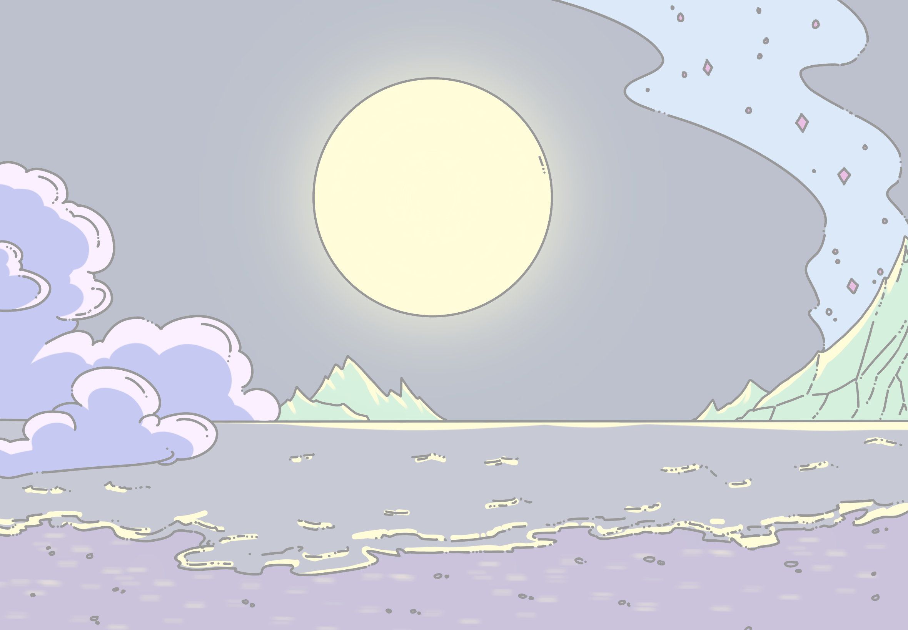
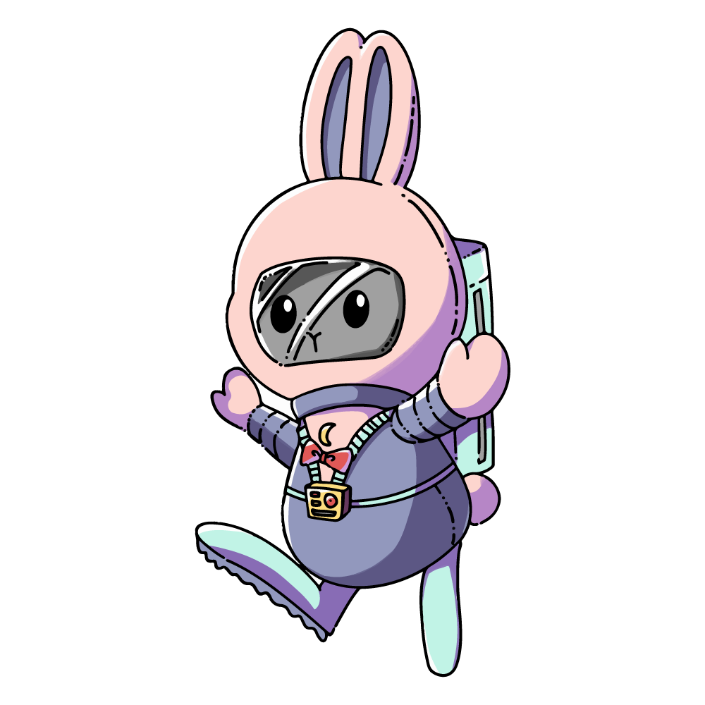
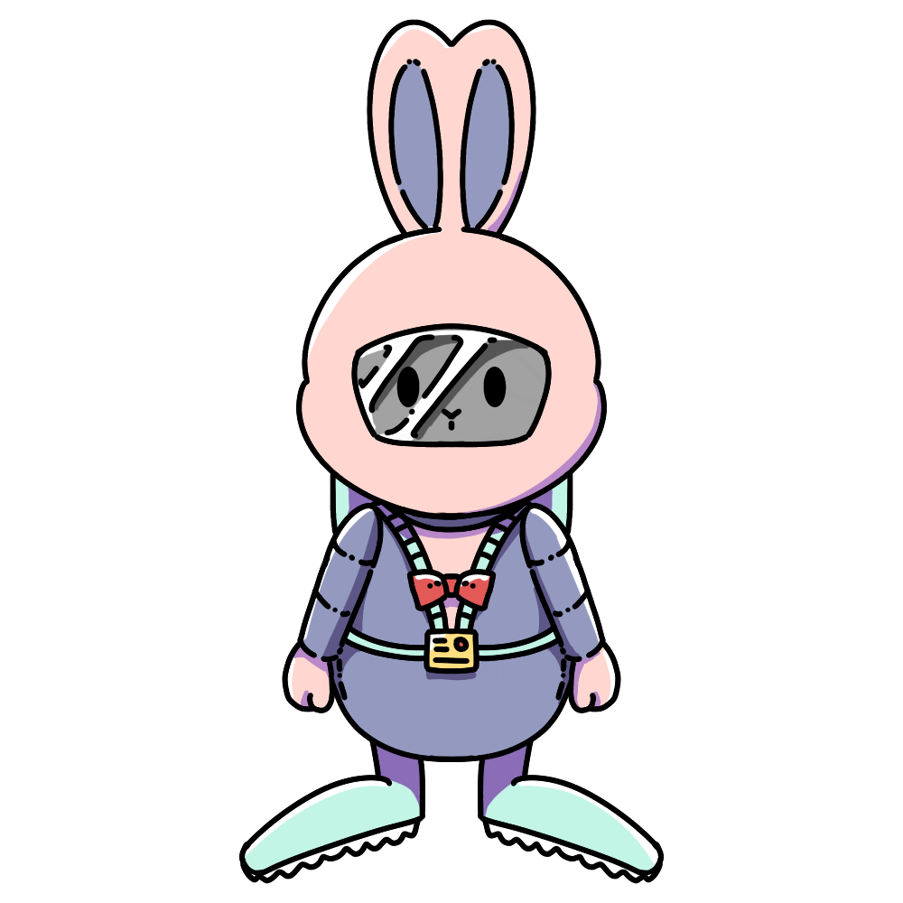
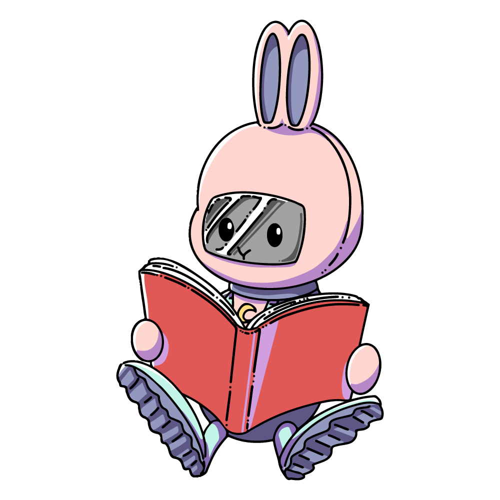

몰로는 여러 행성과 우주를 여행하다가 “MON-06”이라는 행성에 도착하게 된다.
지구와 거의 유사한 이 행성은 위성인 “BANI”를 가진 행성으로 달과 비슷한 생김새를 갖고 있다.
하늘에는 구름 거북이가, 지상과 바다에는 해적 갈메기, 해적 꽃게 등 다양한 해양생물들이 살고 있었으며 다양한 생명체가 존재했다.
그러다 문득 “MANI”에는 무엇이 있을지 궁금해진 몰루는 험난한 모험을 떠나게 된다.
제작계기
2D게임을 만드는 과제가 생겨 고민을 하고 있던 때였다. 갑자기 문득 달토끼를 소재로 퍼즐게임을 만들면 어떨까 싶어 구상하게 된 캐릭터.
맵의 구성과 캐릭터의 대략적인 구상만 해두고 이후에 살을 입혀 기획하게 되었다.
캐릭터가 움직이는 모션과 이런저런 설정을 만지다보니 재미있다 느꼈으며, “몰로'라는 이름을 붙여주며 더 애정이 가고 그런 몰로를
다른 사람들에게 소개해주고자 이 사이트를 만들게 되었다.